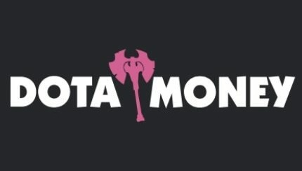
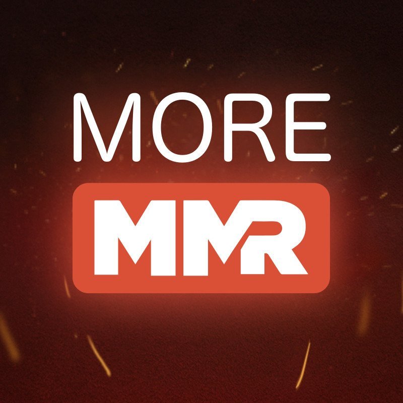
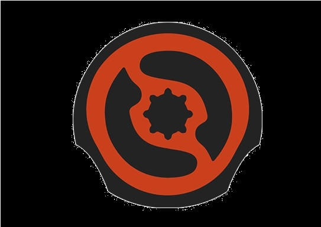

| Гайды | |||
|  CS Money — портал, который поможет пользователю обмениваться вещами. Например, игрок может обменять 10 ненужных вещей на одну дорогую, которая ему нравится. Сайт интересен тем фактом, что здесь можно дешевле обменять вещи, чем это было бы с продажей на торговой площадке. На CS Money установлена минимальная комиссия на обмен вещей. Поддерживаются предметы из Dota 2 и не только. |
|||
|  MoreMMR — обучающий сайт с видеороликами и заданиями. Придумал портал один из основателей «Нетологии-групп», компании, которая занимается онлайн-образованием. Лицом и голосом проекта стал Павел Занозин. Спортивный комментатор заявил, что авторы также привлекли профессионалов, но не назвал имен, кроме Романа «Resolut1on» Фоминка — только уточнил, что это «уровень победителей The International». |
|||
|  Feedless — это программа-компаньон, которая вслух даёт игроку советы на английском языке. Она говорит, какие соперники ушли с линии, как скоро появится руна, напоминает, что нужно застакать лагерь крипов, отмечает, что скоро упадут варды. Большая часть функций доступна в обычной версии, в улучшенной Feedless добавляет, что нужно носить свиток телепортации и что игрок держит варды в инвентаре слишком долго. |
|||
Gosu.ai — сайт для анализа матчей, находится в стадии альфа-тестирования. Он оценивает ваши предметы в начале игры, рассказывает, какой вклад в победу вы внесли, сколько крипов пропустили и сколько времени потеряли на том, что использовали мышку вместо хоткеев. Игрок взаимодействует с программой через бота в Steam, которого нужно добавить в друзья. |
|||
Pvgna — ресурс с видеогайдами на английском языке. Контент разделён на ветки с общими темами: как увеличить MMR, как играть на керри, саппорте, оффлейнере и мидере, как побеждать в патче 7.06. Еще есть раздел о базовых механиках и концептах. Ветки состоят из гайдов на более конкретные темы — сначала идут основы, а потом более узкие руководства. Каждый гайд делится на небольшие видеоролики примерно по 15 минут. Некоторые видео не принадлежат ни к одной из основных тем. |